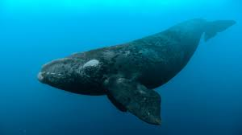

Porcelain mushrooms (Oudemansiella mucida), like these “towering” from a beech tree on Greece’s
Mount Olympus, reach between one and three inches tall.
Fungi have embarked on countless global journeys, hitching a ride on imported plants or simply
wafting hundreds of miles in the wind. Learn more about them at the link in bio.
Photo by @agorastospapatsanis
Photo by @joelsartore | A female Edward’s bark scorpion stands completely covered by her
offspring at Verve Biotech, a Nebraska-based company studying arachnid venom for use in
biomedical research.
Calling all shark lovers‚Äîand haters we‚Äôre about to convert to lovers‚Äîit‚Äôs time for #Sharkfest ü¶à

natgeo
Rare North Atlantic right whales glide through Cape Cod Bay in Massachusetts. These whales are
some of the most endangered in the world.